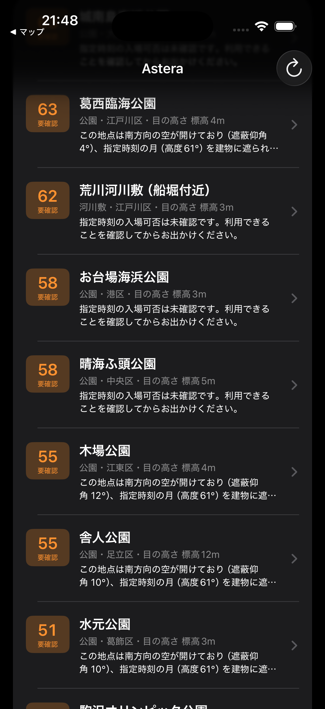

Astera は、今夜どこへ行けば見えるかを、理由つきで教える iPhone アプリ。
観測する人の目の高さ地上・屋上・展望台の床の標高 + 目線
PLATEAU の 3D 都市モデル23区の建物の形と高さ
月・惑星・恒星の位置日時ごとに方角と高さを計算
雲・街明かり・営業時間Open-Meteo・VIIRS 夜間光・公式情報
天体がその高さより上なら「見える」。天気と暗さを足して順位を付け、理由の文と 3D で示す。

公開データだけで動く。いまは 23区の 43地点。地点はデータを足すだけで増やせ、ほかの都市にも広げられる。